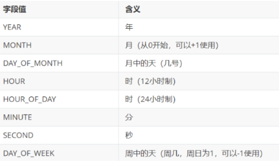
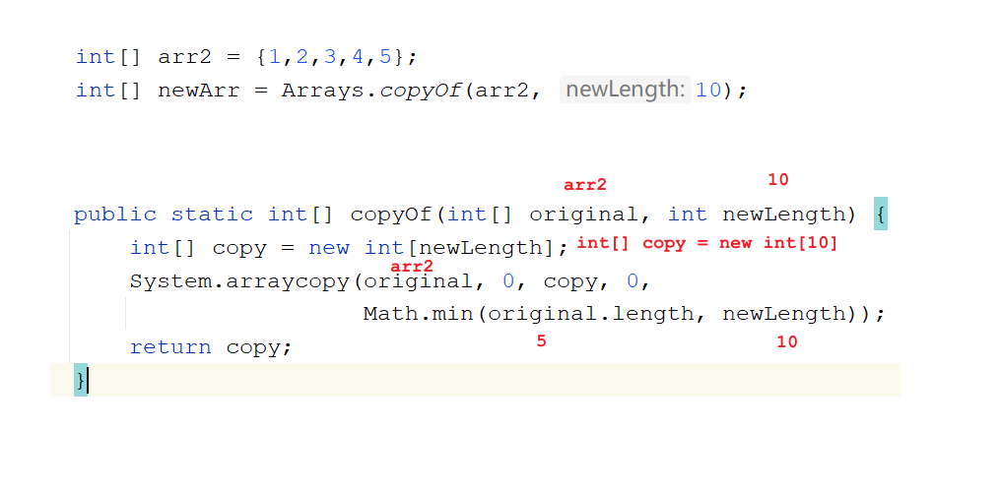
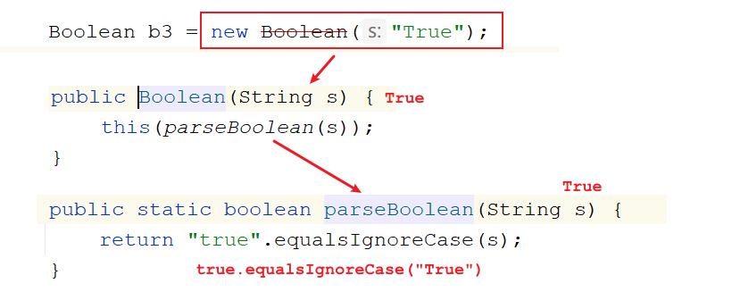
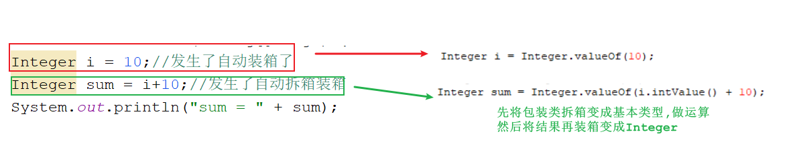
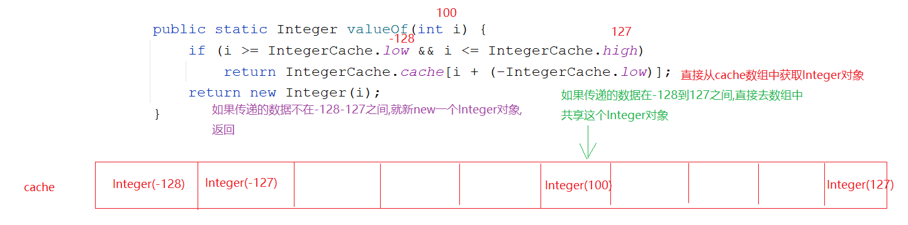
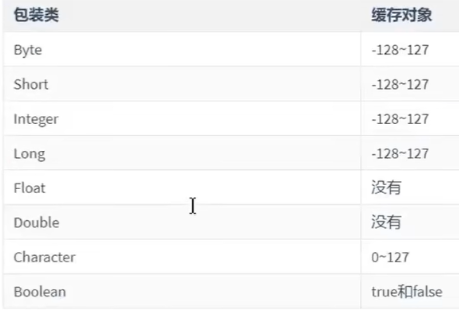

来源：用户提供的 笔记(1).zip / 03_笔记/模块15_API/模块15.常用API.md。保留原课程内容，历史环境、示例错误和故意报错的教学代码应结合上下文阅读。
模块15.常用API
模块14回顾:
String:
1.构造:
String() String(String s) String(char[] chars) String(byte[] bytes)
String(char[] chars,int offset,int count) String(byte[] chars,int offset,int count)
2.判断方法:
equals equalsIgnoreCase
3.获取方法:
length() concat(String s) charAt(int index) indexOf(String s) subString(开始索引)
subString(开始索引,结束索引) -> 含头不含尾
4.转换方法:
toCharArray() getBytes() getBytes(String charsetName) replace(c1,c2)
5.分割方法:
split(String regex)
6.其他方法:
contains(String s) endsWith(String s) statsWith(String s) toLowerCase()
toUpperCase() trim()
StringBuilder:
1.append(任意类型数据)
2.reverse()
3.toString()
模块十五重点:
1.会BigInteger和BigDecimal操作
2.会Date和SimpleDateFormat的操作
3.会System中的常用方法 -> 主要是数组复制
4.会Arrays中的常用方法
5.会利用包装类定义一个标准的javabean
6.会包装类和String之间的转换
第一章.Math类
1.Math类介绍
1.概述:数学工具类
2.作用:主要用于数学运算
3.特点:
a.构造方法私有了
b.方法都是静态的
4.使用:
类名直接调用
2.Math类方法
static int abs(int a) -> 求参数的绝对值
static double ceil(double a) -> 向上取整
static double floor(double a) ->向下取整
static long round(double a) -> 四舍五入
static int max(int a, int b) ->求两个数之间的较大值
static int min(int a, int b) ->求两个数之间的较小值
public class Demo01Math {
public static void main(String[] args) {
//static int abs(int a) -> 求参数的绝对值
System.out.println(Math.abs(-10));
//static double ceil(double a) -> 向上取整
System.out.println(Math.ceil(3.6));
//static double floor(double a) ->向下取整
System.out.println(Math.floor(3.6));
//static long round(double a) -> 四舍五入
System.out.println(Math.round(3.6));
System.out.println(Math.round(-2.8));
//static int max(int a, int b) ->求两个数之间的较大值
System.out.println(Math.max(10,20));
//static int min(int a, int b) ->求两个数之间的较小值
System.out.println(Math.min(10,20));
}
}
第二章.BigInteger
1.BigInteger介绍
1.问题描述:我们操作数据,将来的数据有可能非常大,大到比long还要大,这种数据我们一般称之为"对象"
2.作用:
处理超大整数
3.构造:
BigInteger(String val) -> 参数的格式必须是数字形式
4.方法:
BigInteger add(BigInteger val) 返回其值为 (this + val) 的 BigInteger
BigInteger subtract(BigInteger val) 返回其值为 (this - val) 的 BigInteger
BigInteger multiply(BigInteger val) 返回其值为 (this * val) 的 BigInteger
BigInteger divide(BigInteger val) 返回其值为 (this / val) 的 BigInteger
2.BigInteger使用
public class Demo02BigInteger {
public static void main(String[] args) {
BigInteger b1 = new BigInteger("121212121212121212121212121212121212121");
BigInteger b2 = new BigInteger("121212121212121212121212121212121212121");
//BigInteger add(BigInteger val) 返回其值为 (this + val) 的 BigInteger
System.out.println(b1.add(b2));
//BigInteger subtract(BigInteger val) 返回其值为 (this - val) 的 BigInteger
System.out.println(b1.subtract(b2));
//BigInteger multiply(BigInteger val) 返回其值为 (this * val) 的 BigInteger
System.out.println(b1.multiply(b2));
//BigInteger divide(BigInteger val) 返回其值为 (this / val) 的 BigInteger
System.out.println(b1.divide(b2));
}
}
int intValue() 将BigInteger转成int
long longValue() 将BigInteger 转成 long
BigInteger上限:42亿的21亿次方,内存根本扛不住,所以我们可以认为BigInteger无上限
第三章.BigDecimal类
1.BigDecimal介绍
1.问题描述:我们知道直接用float或者double做运算会出现精度损失的问题,所以将来设计到钱,我们就不能用float或者double直接做运算
2.作用:主要是解决float和double直接做运算出现的精度损失问题
3.构造方法:
BigDecimal(String val) -> val必须要是数字形式
4.常用方法:
static BigDecimal valueOf(double val) -> 此方法初始化小数时可以传入double型数据
BigDecimal add(BigDecimal val) 返回其值为 (this + val) 的 BigDecimal
BigDecimal subtract(BigDecimal val) 返回其值为 (this - val) 的 BigDecimal
BigDecimal multiply(BigDecimal val) 返回其值为 (this * val) 的 BigDecimal
BigDecimal divide(BigDecimal val) 返回其值为 (this / val) 的 BigDecimal
BigDecimal divide(BigDecimal divisor, int scale, int roundingMode)
divisor:除号后面的那个数
scale:指定保留几位小数
roundingMode:取舍方式
static int ROUND_UP -> 向上加1
static int ROUND_DOWN -> 直接舍去
static int ROUND_HALF_UP -> 四舍五入
5.注意:
如果除不尽,会报错,出现运算异常
2.BigDecimal使用
public class Demo03BigDecimal {
public static void main(String[] args) {
//big01();
//big02();
big03();
}
private static void big03() {
BigDecimal b1 = new BigDecimal("3.55");
BigDecimal b2 = new BigDecimal("2.12");
BigDecimal divide = b1.divide(b2, 2, BigDecimal.ROUND_UP);
System.out.println("divide = " + divide);
double v = divide.doubleValue();
System.out.println("v = " + v);
}
private static void big02() {
BigDecimal b1 = new BigDecimal("3.55");
//BigDecimal b2 = new BigDecimal("2.12");
BigDecimal b2 = BigDecimal.valueOf(2.12);
//BigDecimal add(BigDecimal val) 返回其值为 (this + val) 的 BigDecimal
BigDecimal add = b1.add(b2);
System.out.println("add = " + add);
//BigDecimal subtract(BigDecimal val) 返回其值为 (this - val) 的 BigDecimal
BigDecimal subtract = b1.subtract(b2);
System.out.println("subtract = " + subtract);
//BigDecimal multiply(BigDecimal val) 返回其值为 (this * val) 的 BigDecimal
BigDecimal multiply = b1.multiply(b2);
System.out.println("multiply = " + multiply);
//BigDecimal divide(BigDecimal val) 返回其值为 (this / val) 的 BigDecimal
BigDecimal divide = b1.divide(b2);
System.out.println("divide = " + divide);
}
private static void big01() {
float a = 3.55F;
float b = 2.12F;
float result = a-b;
System.out.println("result = " + result);//1.4300001
}
}
double doubleValue() 将此BigDecimal转成double
3.BigDecimal除法过时方法解决
1.注意:如果调用的成员上面有一个横线,证明此成员过时了,底层会有一个注解@Deprecated修饰,但是过时的成员还能使用,只不过被新的成员代替了,不推荐使用了
2.方法:
divide(BigDecimal divisor, int scale, RoundingMode roundingMode)
divisor:代表除号后面的数据
scale:保留几位小数
roundingMode:取舍方式-> RoundingMode是一个枚举,里面的成员可以类名直接调用
UP:向上加1
DOWN:直接舍去
HALF_UP:四舍五入
private static void big04() {
BigDecimal b1 = new BigDecimal("3.55");
BigDecimal b2 = new BigDecimal("2.12");
BigDecimal divide = b1.divide(b2, 2, RoundingMode.HALF_UP);
System.out.println("divide = " + divide);
}
第四章.Date日期类
1.Date类的介绍
1.概述:表示特定的瞬间,精确到毫秒
2.常识:
a.1000毫秒 = 1秒
b.时间原点:1970年1月1日 0时0分0秒(UNIX系统起始时间),叫做格林威治时间,在0时区上
c.时区:北京位于东八区,一个时区经度差15度,时间相差一个小时,所以北京时间比时间原点所在时区时间差8个小时
d.北京经纬度:东经116 北纬39.56 -> 温带大陆性季风气候
e.赤道 本初子午线(0度经线)
2.Date类的使用
1.构造:
Date() -> 获取当前系统时间
Date(long time) -> 获取指定时间,传递毫秒值 -> 从时间原点开始算
private static void date01() {
//Date() -> 获取当前系统时间
Date date1 = new Date();
System.out.println("date1 = " + date1);
//Date(long time) -> 获取指定时间,传递毫秒值 -> 从时间原点开始算
Date date2 = new Date(1000L);
System.out.println("date2 = " + date2);
}
3.Date类的常用方法
1.void setTime(long time) -> 设置时间,传递毫秒值-> 从时间原点开始算
2.long getTime()->获取时间,返回毫秒值
private static void date02() {
Date date = new Date();
//1.void setTime(long time) -> 设置时间,传递毫秒值-> 从时间原点开始算
date.setTime(1000L);
//2.long getTime()->获取时间,返回毫秒值
System.out.println(date.getTime());
}
第五章.Calendar日历类
1.Calendar介绍
1.概述:日历类,抽象类
2.获取:Calendar中的方法:
static Calendar getInstance()
3.月份对比:
国外: 0 1 2 3 4 5 6 7 8 9 10 11
国内: 1 2 3 4 5 6 7 8 9 10 11 12

常用方法:
int get(int field) ->返回给定日历字段的值
void set(int field, int value) :将给定的日历字段设置为指定的值
void add(int field, int amount) :根据日历的规则,为给定的日历字段添加或者减去指定的时间量
Date getTime():将Calendar转成Date对象
field:代表的是日历字段-> 年 月 日 星期等,都是静态的
private static void calendar02() {
Calendar calendar = Calendar.getInstance();//多态
//int get(int field) ->返回给定日历字段的值
int year = calendar.get(Calendar.YEAR);
System.out.println("year = " + year);
//void set(int field, int value) :将给定的日历字段设置为指定的值
//calendar.set(Calendar.YEAR,2028);
//System.out.println(calendar.get(Calendar.YEAR));
//void add(int field, int amount) :根据日历的规则,为给定的日历字段添加或者减去指定的时间量
calendar.add(Calendar.YEAR,-1);
System.out.println(calendar.get(Calendar.YEAR));
//Date getTime():将Calendar转成Date对象
Date date = calendar.getTime();
System.out.println("date = " + date);
}
扩展方法:
javavoid set(int year, int month, int date) -> 直接设置年月日 需求:键盘录入一个年份,判断这一年是闰年,还是平年 步骤: 1.创建Calendar对象 2.创建Scanner对象,键盘录入一个年份 3.调用set方法,传递年,月,日 set(年,2,1) -> 国外是0-11,所以设置成2月就是代表3月 4.将day减1天(3月1日减1天,就是2月最后一天,知道2月最后一天了,就知道是平年还是闰年了) 5.获取day判断平年还是闰年,输出结果javaprivate static void calendar03() { //1.创建Calendar对象 Calendar calendar = Calendar.getInstance(); //2.创建Scanner对象,键盘录入一个年份 Scanner sc = new Scanner(System.in); int year = sc.nextInt(); //3.调用set方法,传递年,月,日 //set(年,2,1) -> 国外是0-11,所以设置成2月就是代表3月 calendar.set(year,2,1); //4.将day减1天(3月1日减1天,就是2月最后一天,知道2月最后一天了,就知道是平年还是闰年了) calendar.add(Calendar.DATE,-1); int day = calendar.get(Calendar.DATE); //5.获取day判断平年还是闰年,输出结果 if (day==29){ System.out.println("闰年"); }else{ System.out.println("平年"); } }
第六章.SimpleDateFormat日期格式化类
1.SimpleDateFormat介绍
1.概述:日期格式化类
2.构造:
SimpleDateFormat(String pattern)
3.pattern代表啥:代表的是我们自己指定的日期格式
字母不能改变,但是中间的连接符我们可以改变
yyyy-MM-dd HH:mm:ss
| 时间字母表示 | 说明 |
|---|---|
| y | 年 |
| M | 月 |
| d | 日 |
| H | 时 |
| m | 分 |
| s | 秒 |
2.SimpleDateFormat常用方法
1.String format(Date date) -> 将Date对象按照指定的格式转成String
2.Date parse(String source)-> 将符合日期格式的字符串转成Date对象
public class Demo03SimpleDateFormat {
public static void main(String[] args) throws ParseException {
SimpleDateFormat sdf = new SimpleDateFormat("yyyy-MM-dd HH:mm:ss");
//1.String format(Date date) -> 将Date对象按照指定的格式转成String
String time1 = sdf.format(new Date());
System.out.println("time1 = " + time1);
//2.Date parse(String source)-> 将符合日期格式的字符串转成Date对象
String time2 = "2000-10-10 10:10:10";
Date date = sdf.parse(time2);
System.out.println("date = " + date);
}
}
第七章.JDK8新日期类
1. LocalDate 本地日期
1.1.获取LocalDate对象
1.概述:LocalDate是一个不可变的日期时间对象，表示日期，通常被视为年月日
2.获取:
static LocalDate now() -> 创建LocalDate对象
static LocalDate of(int year, int month, int dayOfMonth) -> 创建LocalDate对象,设置年月日
public class Demo04LocalDate {
public static void main(String[] args) {
//static LocalDate now() -> 创建LocalDate对象
LocalDate localDate = LocalDate.now();
System.out.println("localDate = " + localDate);
//static LocalDate of(int year, int month, int dayOfMonth) -> 创建LocalDate对象,设置年月日
LocalDate localDate1 = LocalDate.of(2000, 10, 10);
System.out.println("localDate1 = " + localDate1);
}
}
1.2.LocalDateTime对象
1.LocalDateTime概述:LocalDateTime是一个不可变的日期时间对象，代表日期时间，通常被视为年 - 月 - 日 - 时 - 分 - 秒。
2.获取:
static LocalDateTime now() 创建LocalDateTime对象
static LocalDateTime of(int year, Month month, int dayOfMonth, int hour, int minute, int second) 创建LocalDateTime对象,设置年月日时分秒
public class Demo05LocalDateTime {
public static void main(String[] args) {
//static LocalDateTime now() 创建LocalDateTime对象
LocalDateTime localDateTime = LocalDateTime.now();
System.out.println("localDateTime = " + localDateTime);
//static LocalDateTime of(int year, Month month, int dayOfMonth, int hour, int minute, int second) 创建LocalDateTime对象,设置年月日时分秒
LocalDateTime localDateTime1 = LocalDateTime.of(2000, 10, 10, 10, 10, 10);
System.out.println("localDateTime1 = " + localDateTime1);
}
}
1.3.获取日期字段的方法 : 名字是get开头
int getYear()->获取年份
int getMonthValue()->获取月份
int getDayOfMonth()->获取月中的第几天
private static void get() {
LocalDate localDate = LocalDate.now();
//int getYear()->获取年份
System.out.println(localDate.getYear());
//int getMonthValue()->获取月份
System.out.println(localDate.getMonthValue());
//int getDayOfMonth()->获取月中的第几天
System.out.println(localDate.getDayOfMonth());
}
1.4.设置日期字段的方法 : 名字是with开头
LocalDate withYear(int year):设置年份
LocalDate withMonth(int month):设置月份
LocalDate withDayOfMonth(int day):设置月中的天数
private static void with() {
LocalDate localDate = LocalDate.now();
//LocalDate withYear(int year):设置年份
//LocalDate localDate1 = localDate.withYear(2000);
//System.out.println(localDate1);
//LocalDate withMonth(int month):设置月份
//LocalDate localDate2 = localDate1.withMonth(10);
//System.out.println("localDate2 = " + localDate2);
//LocalDate withDayOfMonth(int day):设置月中的天数
//LocalDate localDate3 = localDate2.withDayOfMonth(10);
//System.out.println("localDate3 = " + localDate3);
LocalDate localDate1 = localDate.withYear(2000).withMonth(10).withDayOfMonth(10);
System.out.println("localDate1 = " + localDate1);
}
1.5.日期字段偏移
设置日期字段的偏移量,方法名plus开头,向后偏移
设置日期字段的偏移量,方法名minus开头,向前偏移
/*
向后偏移 -> plus开头方法
向前偏移 -> minus开头方法
*/
private static void plusAndMinus() {
LocalDate localDate = LocalDate.now();
// LocalDate localDate1 = localDate.plusYears(1L);
// System.out.println("localDate1 = " + localDate1);
LocalDate localDate1 = localDate.minusYears(1L);
System.out.println("localDate1 = " + localDate1);
}
2.Period和Duration类
2.1 Period 计算日期之间的偏差
方法:
static Period between(LocalDate d1,LocalDate d2):计算两个日期之间的差值
getYears()->获取相差的年
getMonths()->获取相差的月
getDays()->获取相差的天
private static void period() {
LocalDate local1 = LocalDate.of(2022, 12, 12);
LocalDate local2 = LocalDate.of(2021, 11, 11);
Period period = Period.between(local2, local1);
System.out.println(period.getYears());
System.out.println(period.getMonths());
System.out.println(period.getDays());
}
2.2 Duration计算时间之间的偏差
1.static Duration between(Temporal startInclusive, Temporal endExclusive) -> 计算时间差
2.Temporal : 是一个接口
实现类:LocalDate LocalDateTime
3.参数需要传递 Temporal 的实现类对象, 注意要传递LocalDateTime
因为Duration计算精确时间偏差,所以需要传递能操作精确时间的 LocalDateTime
4.利用Dutation获取相差的时分秒 -> to开头
toDays() :获取相差天数
toHours(): 获取相差小时
toMinutes():获取相差分钟
toMillis():获取相差秒(毫秒)
private static void duration() {
LocalDateTime local1 = LocalDateTime.of(2022, 12, 12,12,12,12);
LocalDateTime local2 = LocalDateTime.of(2021, 11, 11,11,11,11);
Duration duration = Duration.between(local2, local1);
System.out.println(duration.toDays());
System.out.println(duration.toHours());
System.out.println(duration.toMinutes());
System.out.println(duration.toMillis());
}
如果计算年月日 ,就用Period
如果计算时分秒,就用Duration
3.DateTimeFormatter日期格式化类
1.获取:
static DateTimeFormatter ofPattern(String pattern) -> 获取对象,指定格式
2.方法:
String format(TemporalAccessor temporal)-> 将日期对象按照指定的规则转成String
TemporalAccessor:接口,子接口有Temporal
Temporal的实现类:LocalDate LocalDateTime
TemporalAccessor parse(CharSequence text)-> 将符合规则的字符串转成日期对象
如果想将TemporalAccessor转成我们常见的LocalDateTime日期对象,就需要用到LocalDateTime中的静态方法:
static LocalDateTime from(TemporalAccessor temporal)
private static void parse() {
DateTimeFormatter dtf = DateTimeFormatter.ofPattern("yyyy-MM-dd HH:mm:ss");
String time = "2000-10-10 10:10:10";
TemporalAccessor temporalAccessor = dtf.parse(time);
//System.out.println(temporalAccessor);
LocalDateTime localDateTime = LocalDateTime.from(temporalAccessor);
System.out.println("localDateTime = " + localDateTime);
}
第八章.System类
1.概述:系统相关类,是一个工具类
2.特点:
a.构造私有,不能利用构造方法new对象
b.方法都是静态的
3.使用:
类名直接调用
| 方法 | 说明 |
|---|---|
| static long currentTimeMillis() | 返回以毫秒为单位的当前时间,可以测效率 |
| static void exit(int status) | 终止当前正在运行的 Java 虚拟机 |
| static void arraycopy(Object src, int srcPos, Object dest, int destPos, int length | 数组复制 src:源数组 srcPos:从源数组的哪个索引开始复制 dest:目标数组 ldestPos:从目标数组哪个索引开始粘贴 length:复制多少个元素 |
public class Demo01System {
public static void main(String[] args) {
//currentTimeMillis();
//exit();
arraycopy();
}
/*
static void arraycopy(Object src, int srcPos, Object dest, int destPos, int length)
src:源数组
srcPos:从源数组的哪个索引开始复制
dest:目标数组
destPos:从目标数组的哪个索引开始粘贴
length:复制多少个元素
*/
private static void arraycopy() {
int[] arr1 = {1,2,3,4,5};
int[] arr2 = new int[10];
System.arraycopy(arr1,0,arr2,0,5);
for (int i = 0; i < arr2.length; i++) {
System.out.print(arr2[i]+" ");
}
}
private static void exit() {
for (int i = 0; i < 100; i++) {
if (i==5){
System.exit(0);
}
System.out.println("helloworld"+i);
}
}
private static void currentTimeMillis() {
long time = System.currentTimeMillis();
System.out.println("time = " + time);
}
}
第九章.Arrays数组工具类
1.概述:数组工具类
2.特点:
a.构造私有
b.方法静态
3.使用:类名直接调用
| 方法 | 说明 |
|---|
| static String toString(int[] a) | 按照格式打印数组元素 [元素1, 元素2, ...] | | static void sort(int[] a) | 升序排序 | | static int binarySearch(int[] a, int key) | 二分查找(前提是升序) | | static int[] copyOf(int[] original, int newLength) | 数组扩容 |
public class Demo02Arrays {
public static void main(String[] args) {
int[] arr = {5,3,4,6,5,4,7};
System.out.println(Arrays.toString(arr));
System.out.println("==============");
Arrays.sort(arr);
System.out.println(Arrays.toString(arr));
System.out.println("==============");
int[] arr1 = {1,2,3,4,5,6,7};
int index = Arrays.binarySearch(arr1, 3);
System.out.println("index = " + index);
System.out.println("==============");
int[] arr2 = {1,2,3,4,5};
int[] newArr = Arrays.copyOf(arr2, 10);
System.out.println(Arrays.toString(newArr));
arr2 = newArr;
System.out.println(Arrays.toString(arr2));
}
}

第十章.包装类
1.基本数据类型对应的引用数据类型(包装类)
1.概述:就是基本类型对应的类(包装类),我们需要将基本类型转成包装类,从而让基本类型拥有类的特性(说白了,将基本类型转成包装类之后,就可以使用包装类中的方法操作数据)
2.为啥要学包装类:
a.将来有一些特定场景,特定操作,比如调用方法传递包装类
比如:ArrayList集合,里面有一个方法add(Integer i),此时我们不能调用add方法之后直接传递基本类型,因为引用类型不能直接接收基本类型的值,就需要先将基本类型转成包装类,传递到add方法中
b.将来我们还可以将包装类转成基本类型:
包装类不能直接使用+ - * /,所以需要将包装类转成基本类型,才能使用+ - * /
| 基本类型 | 包装类 |
|---|---|
| byte | Byte |
| short | Short |
| int | Integer |
| long | Long |
| float | Float |
| double | Double |
| char | Charactor |
| boolean | Boolean |
2.Integer的介绍以及使用
2.1.Integer基本使用
1.概述:Integer是int的包装类
2.构造: 不推荐使用了,但是还能用
Integer(int value)
Integer(String s) s必须是数字形式
public class Demo01Integer {
public static void main(String[] args) {
Integer i1 = new Integer(10);
System.out.println("i1 = " + i1);
Integer i2 = new Integer("10");
System.out.println("i2 = " + i2);
System.out.println("================");
Boolean b1 = new Boolean("true");
System.out.println("b1 = " + b1);
Boolean b2 = new Boolean("false");
System.out.println("b2 = " + b2);
Boolean b3 = new Boolean("True");
System.out.println("b3 = " + b3);
}
}

1.装箱:将基本类型转成对应的包装类
2.方法:
static Integer valueOf(int i)
static Integer valueOf(String s)
public class Demo02Integer {
public static void main(String[] args) {
Integer i1 = Integer.valueOf(10);
System.out.println("i1 = " + i1);
Integer i2 = Integer.valueOf("100");
System.out.println("i2 = " + i2);
}
}
1.拆箱:将包装类转成基本类型
2.方法:
int intValue();
public class Demo03Integer {
public static void main(String[] args) {
Integer i1 = Integer.valueOf(10);
System.out.println("i1 = " + i1);
int i = i1.intValue();
System.out.println("(i+10) = " + (i + 10));
}
}
2.2.自动拆箱装箱
1.拆箱和装箱很多时候都是自动完成的
public class Demo04Integer {
public static void main(String[] args) {
Integer i = 10;//发生了自动装箱了
Integer sum = i+10;//发生了自动拆箱装箱
System.out.println("sum = " + sum);
}
}

javapublic class Demo05Integer { public static void main(String[] args) { Integer i1 = 100; Integer i2 = 100; System.out.println(i1==i2); Integer i3 = 128; Integer i4 = 128; System.out.println(i3==i4); } }

3.基本类型和String之间的转换
3.1 基本类型往String转
1.方式1:
+ 拼接
2.方式2:String中的静态方法
static String valueOf(int i)
private static void method01() {
int i = 10;
String s1 = i+"";
System.out.println(s1+1);
System.out.println("============");
String s = String.valueOf(10);
System.out.println(s+1);
}
3.2 String转成基本数据类型
每个包装类中都有一个类似的方法: parseXXX
| 位置 | 方法 | 说明 |
|---|---|---|
| Byte | static byte parseByte(String s) | 将String转byte类型 |
| Short | static short parseShort(String s) | 将String转成short类型 |
| Integer | static int parseInt(String s) | 将String转成int类型 |
| Long | static long parseLong(String s) | 将String转成long类型 |
| Float | static float parseFloat(String s) | 将String转成float类型 |
| Double | static double parseDouble(String s) | 将String转成double类型 |
| Boolean | static boolean parseBoolean(String s) | 将String转成boolean类型 |
private static void method02() {
int number = Integer.parseInt("1111");
System.out.println(number+1);
}
java1.在实际开发过程中如何定义一个标准javabean 定义javabean的时候一般会将基本类型的属性定义成包装类型的属性javapublic class User { //private int uid;//用户id private Integer uid;//用户id private String username;//用户名 private String password;//密码 public User() { } public User(Integer uid, String username, String password) { this.uid = uid; this.username = username; this.password = password; } public Integer getUid() { return uid; } public void setUid(Integer uid) { this.uid = uid; } public String getUsername() { return username; } public void setUsername(String username) { this.username = username; } public String getPassword() { return password; } public void setPassword(String password) { this.password = password; } }java1.举例:如果uid为Integer型,默认值是null 2.将来javabean中的数据都是和数据库表联系起来的,我们可以将javabean中的数据添加到表中 如果表中的uid为主键自增的,此时添加语句时uid中的数据不用我们单独维护赋值了,添加语句的sql语句就可以这样写: insert into user(uid,username,password) values (NULL,'金莲','36666'); 3.到时候,我们需要将javabean中封装的数据获取出来放到sql语句中,如果uid为主键自增,而且javabean中的uid为包装类型,默认值为NULL,这样就不用单独维护uid的值了,也不用先给javabean中的uid赋值,然后在保存到数据库中了,咱们就可以直接使用uid的默认值,将默认值放到sql语句的uid列中 4.而且将javabean中的属性变成包装类,还可以使用包装类中的方法去操作此属性值